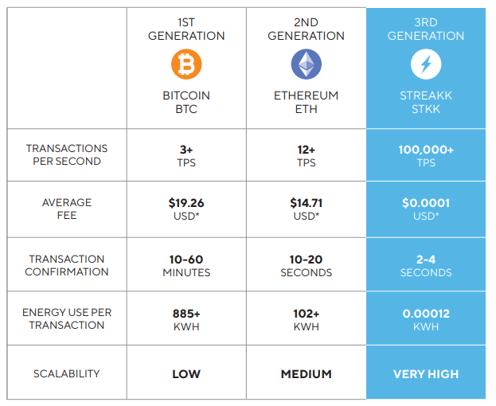

Twarzą i CEO projektu jest Suki Chen, 52-letni przedsiębiorca
Posiada bogate doświadczenie zarówno w branży blockchain, jak i klasycznym biznesie
Współpracujez rządami kilku krajów azjatyckich (m.in. Singapuru, Tajlandii, Filipin, Indonezji) nad wdrożeniem technologii blockchain
Został zaprojektowany do przechowywania wielu kryptowalut, w tym Bitcoin,Ethereum, BNB, Tron i wiele innych
Jeszcze lepiej, nasz zespół rozwoju jest zaangażowany w rozszerzanie
funkcjonalność Streakk Wallet poprzez konsekwentne
dodając kompatybilność z nowymi sieciami blockchain
Celem Streakk jest bycie liderem w branży portfeli kryptowalutowych
portfeli - pierwszym, o którym myślą użytkownicy wchodzący w świat
świat blockchainów i kryptowalut
We wstępnej fazie projektu możemy zarabiać na:
Fenomen Streakk
Streakk zbudowany jest na sieć blockchain trzeciej generacji z niską i przewidywalną opłatą w wysokości zaledwie
0,0001 USD za transakcję. Przy kosztach transakcji będących jedną z głównych przeszkód dla rządów,
dużych korporacji i banków centralnych, które chcą wdrożyć blockchain na dużą skalę, Streakk oferuje
super szybkie i bezpieczne rozwiązanie. To nie czyni Streakk najszybszym blockchainem, ale jedynym Blockchainem
skoncentrowany na transakcjach finansowych.

Link do pełnej prezentacji projektu:
Prezentacja projektu w języku polskim:
Dochód pasywny Streakk
Korzystając z portfela Streakk możemy bezpiecznie przechowywać nasze kryptowaluty,
a także generować prowizje w wysokości od 7% do 20% rocznie.
Istnieje jednak możliwość zwiększenia wkładu poprzez zakup tzw. Node.
Co to Node?
Node jest to tak zwany "token" który możemy kupić jego ceny zaczynają się od 100$.
To jaką część tokenu kupimy zależna jest od aktualnej ceny na rynku którą możemy sprawdzić na tej stronie:
Shared Node – jego cena zaczyna się od 100 $ – dodaje 2% do stakingu.
Dedicated Node – jego cena zaczyna się od 5.000 $ – dodaje 5% do stakingu
Dedicated Node Pro – jego cena zaczyna się od 25.000 $ – dodaje 8% do stakingu
Zarobione odsetki możemy wypłacić kiedy zarobimy minimum 50$. Wykonująć prostą kalkulacje wychodzi na to, że za wpłacone 100$ zarobimy 2$ na tydzień co daje 8$ na miesiąc.
Ważna informacja
Zakup Noda daje nam dodatkowy procent do każdej holdowanej waluty np. Procent Roczny dla USDT wynosi 10% po zakupie noda za 100% procent rocznego USDT wynosi 12%.
Kiedy zakupimy token Node zostaje on zamrożony na naszym koncie na 100 tygodni.
Po tym czasie możemy wypłacić zakupiony token i sprzedać go np na giełdzie np. Bybit. Token za pewnien czas może osiągnąć kilku krotność swojej ceny, co daje nam możliwość dużego zysku względem wpłaconej kwoty.
Program Partnerski
Projekt oferuje nam atrakcyjny Program Partnerski, dzięki któremu zarobimy % od wpłaty każdego zaproszonego użytkownika.
Dodatkowo dostępne są Premie za rangę.
Działają w oparciu o obrót, całego zespołu.Kiedy wypełnimy range to dostajemy przypisaną do niej sume.
Jak zacząć zarabiać pasywnie
Żeby zącząć zarabiać potrzebujemy 3 rzeczy.
Konta na giełdzie kryptowalut, ja osobiście polecam ByBit.
Konta na Streakk.io.
Kapitału początkowego.
Zacznijmy od konta ByBit
Klikniecie w przycisk przeniesie nas na strone rejerstracyjną giełdy ByBit.
Dokonanie rejerstaracji poprzez przycisk zapewnia nam szereg bonusów między innymi. Powitalne 20$ Szereg bonusów Brak opodatkowania na zakup kryptowalut
Konto na Streakk.io
Jedynym sposobem na utworzenie konta jest rejerstracja poprzez link od osoby która posiada już konto na Streakk.io
Jest tak ze względu na wczesną faze projektu, kliknięcie w przycisk przeniesie Cie na strone rejerstracyjną Streakk.io
Po założeniu konta możemy zacząć zarabiać!
Ostatni krok czyli dodanie USDT do konta Streakk
Po zakupie USDT na giełdzie ByBit należy je przelać na nasze konto Streakk.io
Ile USDT na początek?
Według mnie suma dzięki której możemy szybko rozwijac nasz dochod to minimum 1000$ za które kupimy tak zwany Node,
oczywiście nie jest to przymus, możemy równie dobrze zacząć z kupnem Node za 100$ lecz nie bedzie to tak efektywne
Moja Strategia
Na początku projektu będe reinwestował wszystkie zarobione pieniądze po to żeby osiągnąć zadowalające mnie miesięczne zarobki
Oprócz reinwestycji co miesiąć będe przelewał kolejne USDT z własnej kieszeni, co pomoże napędzić zarobki
Prosta Kalkulacja
Po zakupie Node za 1000$ po miesiącu zarobimy 80$
Możemy je od razu wypłacić lub poczekać chwile i kupić kolejne Node które dadzą nam większe zarobki
Za każde dołożone 100$ zarobimy o 8$ więcej
Największym plusem jest to, że tokeny które kupujemy możemy sprzedać po okresie 100 tygodni
Jest to bardzo kusząca opcja, ze względu na to, że rokuje się duże wzrosty wartości tokenu
Dzisiejsza cena Node to okolo 200$, przy wykorzystaniu potencjału projektu cena tokenu może wzrosnąć kilkukrotnie
Kontakt
Znajdziesz tu najnowsze informacje na temat projektu